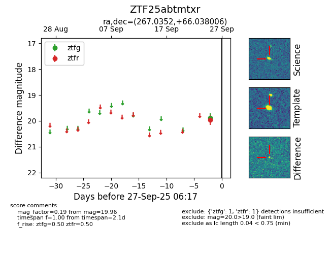

FINK: ZTF25abtmtxr
Lasair: ZTF25abtmtxr
ALeRCE: ZTF25abtmtxr
ZTF25abtmtxr (ztf,fink)
equatorial (ra, dec) = (267.0352,+66.03801)
galactic (l, b) = (95.8080,+31.01406)

last ztfg=19.88, ztfr=19.96
1 ztfg, 1 ztfr detections